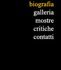
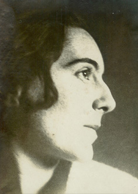

E' giovane, dolce di carattere, minuta di fattezze, un poco timida, ma sa vincere le sue battaglie, come quella di iscriversi. nel 1915,dopo la licenza conseguita presso la Scuola Tecnica "G. Schiapparelli", ai corsi dell'Accademia di Belle Arti di Brera (per Silvia, la più giovane dei tre figli natigli dalla moglie Angela Pessina e cresciuti nella milanesissima quiete di via San Prospero, Emilio Zucchinetti. commerciante in preziosi, desidererebbe forse un indirizzo di studi più conforme a placide prospettive borghesi).

Una vocazione naturale all'osservazione e al disegno la sorregge, riconosciuta e incoraggiata fin dall'infanzia da insegnanti lungimiranti e, soprattutto, dallo zio materno Emilio Borsa nome di prestigio del panorama artistico monzese, a sua volta nipote di Mosè Bianchi e cugino di Pompeo Mariani.Del corpo insegnante braidense fanno parte in quell'epoca personalità artistiche di rilievo come Cesare Tallone, ma a segnare più di altri la formazione della giovane allieva sono lo scultore Ambrogio Bolgiani, professore di Plastica, e il pittore Aldo Carpi che Silvia stessa ricorderà molti anni dopo come suo principale maestro. Il corso termina nel luglio 1919 con tanto di "menzione onorevole".
Conseguita l'abilitazione Silvia ottiene il primo incarico per l'insegnamento del disegno. Ma l'impatto con il mondo della scuola non risulta positivo: una quotidianità che pare negare il suo senso creativo, la fantasia artistica. Dopo pochi mesi. Silvia rinuncia alla cattedra e riprende il cammino interrotto frequentando lo studio del pittore Mario Bettinelli del quale segue i consigli. con particolare attenzione ai fiori e alla figura umana. Successivamente, è lo studio di Attilio Andreoli ad attirarla, in un clima accademico e rassicurante.
All’inizio del 1924 comincia a delinearsi per Silvia una nuova attività: la realizzazione di cuscini. ventagli, paraventi, foulards in seta o crèpe, sciarpe stampate, tessuti decorati che espone per la prima volta in pubblico nelle sale del Lyceum in una collettiva di "Arte applicata all' Industria". Con un’amica , conosciuta ai tempi dell’Accademia, apre uno studio-atelier al 14 di via Montenapoleone, dove opererà fino al maggio 1926.
L'attività si irrobustisce a contatto col mondo della moda e con gli ambienti più selezionati della città. La Milano di quegli anni, in cui la Zucchinetti muove i primi passi dopo l'esperienza di Brera, rappresenta un autentico crogiolo di fermenti artistici e culturali. E' il momento, fra l'altro, dei giovani architetti che occupano spazi sempre più ampi e significativi alle origini di quel moto di ridefinizione del ruolo professionale che approderà alla nascita del design ovvero del "disegno industriale moderno".
Numerose rassegne sorgono a Milano e in Lombardia ed è proprio ad una delle più animate e culturalmente vivaci, la "Biennale di Monza" nella seconda edizione (quella del 1925) che incontra nuovamente Gino Maggioni. suo coetaneo, conosciuto a Brera, già noto per importanti esperienze di illustratore e titolare, da pochi mesi, di un laboratorio per la produzione di mobili "moderni" impiantato a Varedo.
Le idee dell'architetto Maggioni, muovendo da esperienze art noureau e decò si fanno sempre più precorritrici e non può nascere, fra i due artisti, che una fitta collaborazione professionale. Già nel marzo del 1926 l'attività in comune fra lo studio di Varedo e quello di via Montenapoleone risulta pienamente operante in un continuo scambio di idee. suggerimenti, sollecitazioni culturali.
Nel
1927 l'architetto si presenta con la sua produzione alla "III Triennale
Internazionale di Arti Decorative" presso la Villa Reale di Monza.
E’ proprio l’occasione della grande mostra monzese a far decidere
Silvia e Gino, legati ormai da qualcosa di più d'un semplice rapporto
di lavoro: il 7 dicembre 1927 si sposano nel castello di Bizzozero residenza
di campagna della famiglia Zucchinetti, per poi stabilirsi definitivamente
a Varedo.
Il 2 Aprile 1929 nasce a Milano Luigi jr. In un delicatissimo pastello,
che ritrae il figlio dormiente, è riportata tutta la tenerezza
di questa esperienza fondamentale.
Frattanto Silvia ha ripreso la sua attività nel campo degli accessori di arredamento curando fra l'altro una nuova linea di cuscini realizzati a tarsie di panno oppure di fustagno e velluto giocati su elaborazioni formali in meditato accordo tonale. La redazione di "Casa Bella” nota la qualità della produzione e la segnala in diversi numeri della rivista e in una elegante brochure del 1931 dedicata ai "Ricami d'Italia'".
La nascita del secondo figlio, Silvano. il 12 ottobre 1932. motivo anch'essa di tenera pausa, non interrompe tuttavia lo slancio creativo dei genitori .In un improvviso rinnovo d'interesse per la pittura, nel 1933, accanto all'immagine del piccolo Silvano, Silvia dipinge il primo soggetto non ritrattistico: una inaspettata Pianta grassa da una particolare angolatura prospettica. Anche gli impegni di Gino, ormai industriale del mobile, si infittiscono e la "VI Triennale di Milano" (1936) costituisce la sua consacrazione imprenditoriale: la fabbrica per produzione in serie (“Mobili Brevetti Maggioni”) da poco installata a Varedo e l'elegante show-room appena aperta in via Durini 4 costituiscono i punti di forza di un'azienda molto affermata che ha appena realizzato gli arredamenti per l'Università Bocconi e per il Nuovo Ospedale Maggiore in collaborazione con l'architetto Giuseppe Pagano Pogatschnig.
Proprio nel momento in cui le prospettive di lavoro si ampliano ulteriormente, le difficoltà internazionali assumono improvvisamente dimensioni apocalittiche. Dopo l'inizio dei bombardamenti aerei sulla Lombardia, pure l'azienda di Varedo entra in crisi e il desiderio è improvvisamente uno: fuggire da una realtà sempre più simile ad un incubo. E' in questo contesto emotivo che un viaggio in Liguria suggerisce la soluzione di trasferirsi in Riviera, a Diano Marina, un borgo intatto, neppure sfiorato dalle prime correnti turistiche, dove la guerra sembra ancora una vicenda sideralmente remota.
Fra il 1941 e il 1942 il trasferimento è cosa compiuta: l'architetto progetta ed inizia a costruire una villa sulle pendici di Capo Berta in un punto panoramicamente suggestivo. Le vicende successive all' 8 settembre 1943 impediscono la conclusione dell'impresa mentre la guerra si insinua bruscamente nelle vicende della stessa famiglia. Dapprima è Silvia ad essere presa in ostaggio dalle truppe della Repubblica Sociale, quindi toccano a Gino arresto e carcerazione presso la sede imperiese dell' S.D. germanica nell'ottobre 1944 ( carcerazione protrattisi fino al 23 aprile 1945).
La fine della guerra significherebbe anche ritorno alla normalità ma Gino, dopo quest’esperienza traumatica, non si sente più imprenditore e decide di vendere lo stabilimento di mobili di Varedo. Riprende invece i contatti con l'ambiente degli illustratori e realizza diverse edizioni per importanti case milanesi. Anche per Silvia, e forse soprattutto per lei, il ritorno alla normalità è sinonimo di risveglio artistico. I figli crescono e le diminuite incombenze domestiche le consentono nuovi spazi di interesse: anche lei rompe con il passato e scopre, o meglio riscopre. il gusto per la pittura
Negli
anni 1947-1948-1949 vengono organizzate dalla locale Azienda di Soggiorno
tre edizioni della "Mostra del Paesaggio Italiano“ che si avvale
della collaborazione dei coniugi Maggioni per le loro conoscenze nel mondo
dell’arte.
Gli orizzonti di pittrice di Silvia si ampliano con la partecipazione
alla "Mostra Nazionale d'Arte" di Napoli (settembre 1950) e
ad una rassegna ad Imperia (agosto 1951. Nel settembre 1951s’inaugura
a Diano Marina la "Mostra d'Arte Contemporanea" (eredità
della `"Mostra del Paesaggio") che schiera ancora un gran numero
d'artisti amici dei Maggioni: Ma il principale ospite della rassegna è,
nientemeno, Carlo Carrà che si è convinto a sostituire per
un anno Forte dei Marmi con Diano Marina, frequentando per alcune settimane
con tavolozza e cavalletto i punti più pittoreschi della costa
circondato dall'eccitata curiosità dei pittori locali. Non di rado,
nel corso del suo soggiorno, Carrà con la moglie Ines è
ospite dei Maggioni alla villa della "Pace". A lungo i Carrà
ricorderanno "con tanto piacere le belle giornate passate a Diano
Marina e le buone ore trascorse nella vostra casa intelligente e amorosa".
Nel
gennaio del 1953 i Maggioni sono invitati al "VII Raduno dei Pittori
di Bardonecchia.
Tra il dicembre 1954 e il gennaio 1955 Silvia torna a Milano per partecipare
all'importante "Mostra Annuale degli Artisti della Società
per le Belle Arti ed Esposizione Permanente": un'occasione per stringere
nuovamente i rapporti con tutti i suoi amici pittori, specialmente Emma
Jeker e Dino Lanaro, frequentare studi di nuovi artisti emergenti. Gino
la segue, insolitamente quieto, quasi assente: anche il suo interesse
per l'incisione e per la scultura appare allentato, come sospeso.
Poi
le sue condizioni peggiorano bruscamente e muore il 14 dicembre 1955.
Per Silvia, che da trent'anni divideva con lui gli affetti della vita,
è un colpo durissimo. Ne segue "un periodo di disperata prostrazione",
poi, spinta dai figli e dagli amici più fraterni riprende a vivere
con grande pena. E' la pittura a darle la forza di superare ciò
che in realtà non riuscirà mai a superare del tutto, a darle
una ragione di vita,quasi un alter ego con cui dialogare in una costante
ansia di ricerca artistica e morale al tempo stesso. La piccola mostra
personale che alcuni amici le organizzano circa un anno più tardi
(aprile-maggio 1957) al Palazzo del Parco di Bordighera (trentun tele
e sedici disegni con la presentazione di Ernesto Caballo) costituisce
a questo punto una sorta d'autoriflessione sulla pittura fino ad allora
praticata. Fiori, paesaggi, ritratti, mandorli: elementi di una ricerca
fino ad allora non approdata a vere soluzioni vengono chiamati idealmente
a raccolta non tanto dal critico quanto dall'artista sulla soglia di una
personale quanto radicale rivoluzione espressiva. Nell’estate del
’57 Silvia percorre un lungo viaggio in Danimarca e Norvegia e poi
ancora, nel giugno del '58, nella Germania Occidentale. Solo due mesi
più tardi, in ottobre, giunge la prima vera personale presso la
galleria "Marguttiana"a Roma. Si tratta d'una ventina di quadri
basati essenzialmente sull'esperienza norvegese che Franco Miele raccorda
con una breve ma penetrante presentazione né mostra alcuna difficoltà
a riconoscere come fase nuovissima della pittura di Silvia, fase di superamento
"di un esteriore descrittivismo per tendere soltanto ad una essenzialità
di rappresentazione" fatta di "stesure tenui", visioni
"chiare ed aperte, quasi sospese in accenni di sogno".
Il 1959 è ancora un anno di ricerca che le partecipazioni a Foggia
(aprile-maggio) Genova (maggio), Saint Vincent (agosto-settembre) e ancora
Genova (dicembre) sottolineano senza interrompere.
Nel febbraio 1960 una nuova personale presso la Saletta del Ponte Vecchio a Ivrea si avvale dell'introduzione critica di Carlo Munari. Sono mesi di grande attività e movimento, quasi una rinascita psicologica finalmente compiuta: partecipa a rassegne a Santa Margherita Ligure. Spoleto, Termoli, Sanremo, Ventimiglia, Milano, Foggia: viaggia a Venezia, Firenze, Arezzo, Parigi. E la ricerca cromatica in atto si innesta sulla scomposizione geometrica delle forme applicate alle vedute, riecheggiante la lezione cubista. Nel 1963 gli orizzonti di Silvia si aprono ulteriormente: grazie alla mediazione di un amico fraterno, il filosofo tedesco Walter Linden conosciuto durante gli anni di guerra, e i suoi quadri vengono esposti a Zurigo (galleria "Burdeke" in marzo-aprile) e a Berna ("Podiumgalerie" in aprile-maggio).
Alla
fine dello stesso anno, una nuova personale coinvolge a fondo la pittrice
(novembre-dicembre 1963) presso la "Galleria del Vantaggio"
a Roma con presentazione di Hans Hofer.
Nel luglio del 1964 partecipa alla terza edizione del "Premio Nazionale
di Pittura" a Imperia: la pittrice va ormai da alcuni anni rielaborando
il terna degli ulivi, che meglio di ogni altro ha caratterizzato la sua
produzione, collegando implicazioni di matrice culturale classica a motivazioni
profonde, quasi metafisiche: i tronchi nodosi e robusti di ulivi secolari,
solidi, mai inquietanti. vissuti, maestosi, talvolta scarni. Gli ulivi
liguri della sua terra d'adozione che rappresentano per lei un fertile
terreno di sperimentazione tecnica, in funzione della tensione verso la
sintesi delle forme e dell'indagine coloristica che le cortecce, le nodosità,
le ramificazioni le consentono in maniera più congeniale di qualsiasi
altro soggetto. Ne indaga vibrazioni profonde, ne coglie trepidazioni
melodiche, ritmi di danze ancestrali.
Il
biennio '65-'66 è per Silvia Maggioni quanto mai intenso: partecipazioni
a Mentone, Sanremo, Diano, Milano, Bordighera e ancora Milano; viaggi
lungo tutta la costa adriatica, in Trentino, in Sicilia, Sardegna, Piemonte.
I risultati di tanta ricerca approdano alle tre personali del 1967 inaugurate
a breve distanza l'una dall'altra: Torino ("L'Approdo'", in
gennaio), Bolzano ("Galerie am Dominikanerplatz" in marzo),
Trento ("Fogolino", in ottobre-novembre). L'indirizzo critico
e la scelta sono di Carluccio prima, di Herta Sponder poi.
L'attenzione, ora, si appunta sulla natura "santuario vivente", "teca di cristallo in cui batte il cuore dell'uomo", " specchio che riflette uno specchio alludendo così ad un ribaltamento di immagini che non ha limiti": natura come "sistema di emblemi".
Le
sollecitazioni giungono da lunghi viaggi in Puglia e in Grecia (ove è
vivissimo l'impatto emozionale con una sorta di "paesaggio dell'antichità").
Fra '68 e 69 sono le personali di Rho (con presentazione di Mario Portalupi),
Sanremo (galleria Beniamino), Cervo (Hotel Foresta) e Imperia (galleria
Rondò) a scandire i ritmi del periodo forse più intenso
della pittrice sebbene abbia ormai superato i settant'anni. E lo slancio
prosegue con la personale di Milano presso la galleria Cavour" di
Renzo Cortina (aprile 1970). trenta dipinti e dieci disegni ordinati da
Luigi Carluccio.
Nuovi viaggi in Germania (1969) e in Austria (1970), ad Amburgo (1971) mantengono alta la temperie creativa di Silvia. E altre personali si susseguono: Diano Marina nell'ottobre 1971, Cervo nell'ottobre 1972 ed Alessandria nel novembre successivo con il contributo selettivo, stavolta, di Enotrio Mastrolonardo.
E poi, Bergamo alla galleria "La Tavolozza" (ottobre-novembre 1973), Sestrière (marzo 1974), senza abbandonare del tutto le partecipazioni a collettive (Santhià, Asti, Como, tutte nel 1974).
Particolare
importanza Silvia stessa attribuisce alla mostra organizzata per lei dalla
"Nieuwe Gallery Paolo" di Appelmanstroat ad. Anversa nel marzo-aprile
1975: alla presentazione del critico d'arte Remy De Cnodder si accompagna
una serie di interessanti recensioni alla ricerca della "sphère
diaphane" della sua pittura. Finalmente, e siamo nell'agosto del
1975 in vista ormai del traguardo degli ottant'anni, anche Diano Marina
dedica una piccola personale alla pittrice che tanto aveva contribuito
alla qualificazione culturale della città.
Dopo la mostra di Bologna (ottobre 1976) Silvia si inserisce attivamente
nel circuito delle collettive del Centro Europeo di Iniziative Culturali
di Roma (Lussemburgo e Bruxelles nel 1976, Parigi nel 1977, Marsiglia
e Bamberga nel 1978, Cracovia nel 1979 e Strasburgo nel 1980).
Occasioni
di scambio, di informazione, di mise-a-jour per poi tornare alla "Pace"
a dipingere, a disegnare, a riposare, mai soddisfatta dei risultati raggiunti.
mai stanca di conoscere e di apprendere. Ciò che meraviglia in
questo ultimo periodo è una straordinaria vitalità che finisce
per animare la pittura di un'ansia creativa sorprendente in una persona
ultraottantenne.
Brescia e Torino nel 1979 vedono le ultime personali d'impegno, quella
torinese in particolare presso la galleria d'arte "Emmedue"
con trentotto quadri e cinque disegni. Poi è un rincorrersi di
collettive di profilo molto vario tra 1980 e 1981: Catanzaro, Viterbo,
Diano Marina, San Leo, Parigi, Suzzara, Bormio. In estate, come d'abitudine
da alcuni anni, lunghe vacanze sulle Dolomiti consentono il confronto
con forme di paesaggio poco familiari che esercitano sulla pittrice un
fascino potente e non di rado si trasformano in soggetti da dipingereI
fusti diritti dei larici, tra i quali filtrano le luci del bosco, delle
betulle, degli abeti, con le loro fronde maestose a confronto coi tronchi
nodosi e contorti dei "suoi" ulivi ritornano in una sorta di
grande cadenza rappresentativa degli ultimi anni. Ultimi. si. perché
dopo le comparse in pubblico al premio di pittura "Magiargé"
di Bordighera (luglio-agosto 1982) e alla personale antologica di Diano
Marina (settembre 1982) qualcosa nella prodigiosa esuberanza senile di
Silvia Maggioni si incrina irreparabilmente. Alcuni quadri hanno una chiara
valenza simbolica, di bilanci conclusivi. Quando morirà nell''ospedale
di Imperia, il 15 febbraio 1983, un quadro l'attenderà ancora inutilmente
sul cavalletto dello studio: l' Ultimo ulivo”.
Gianni De Moro